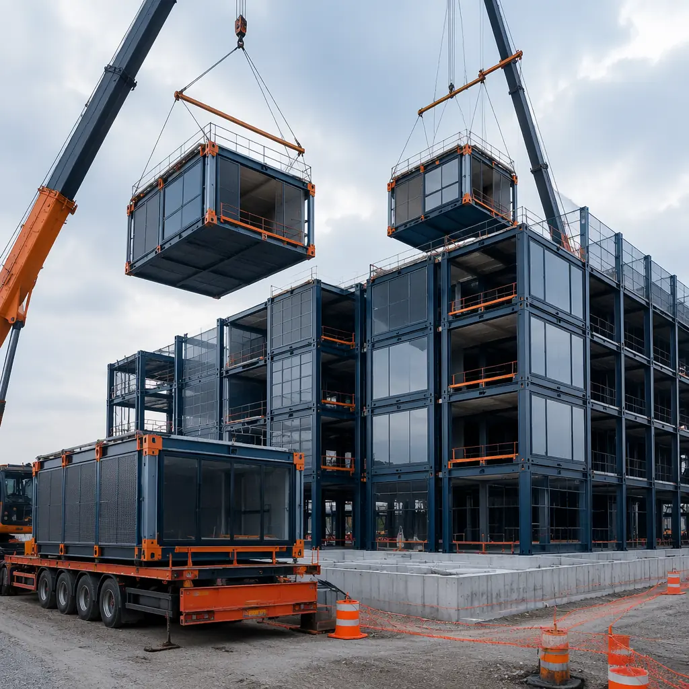
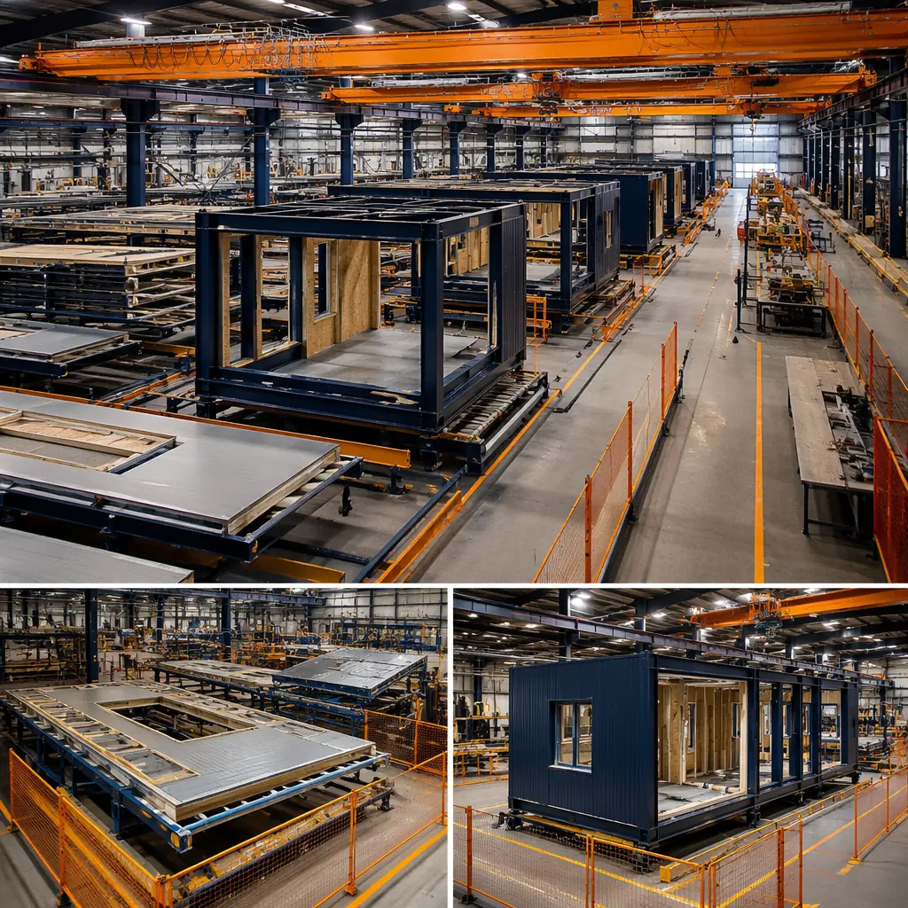
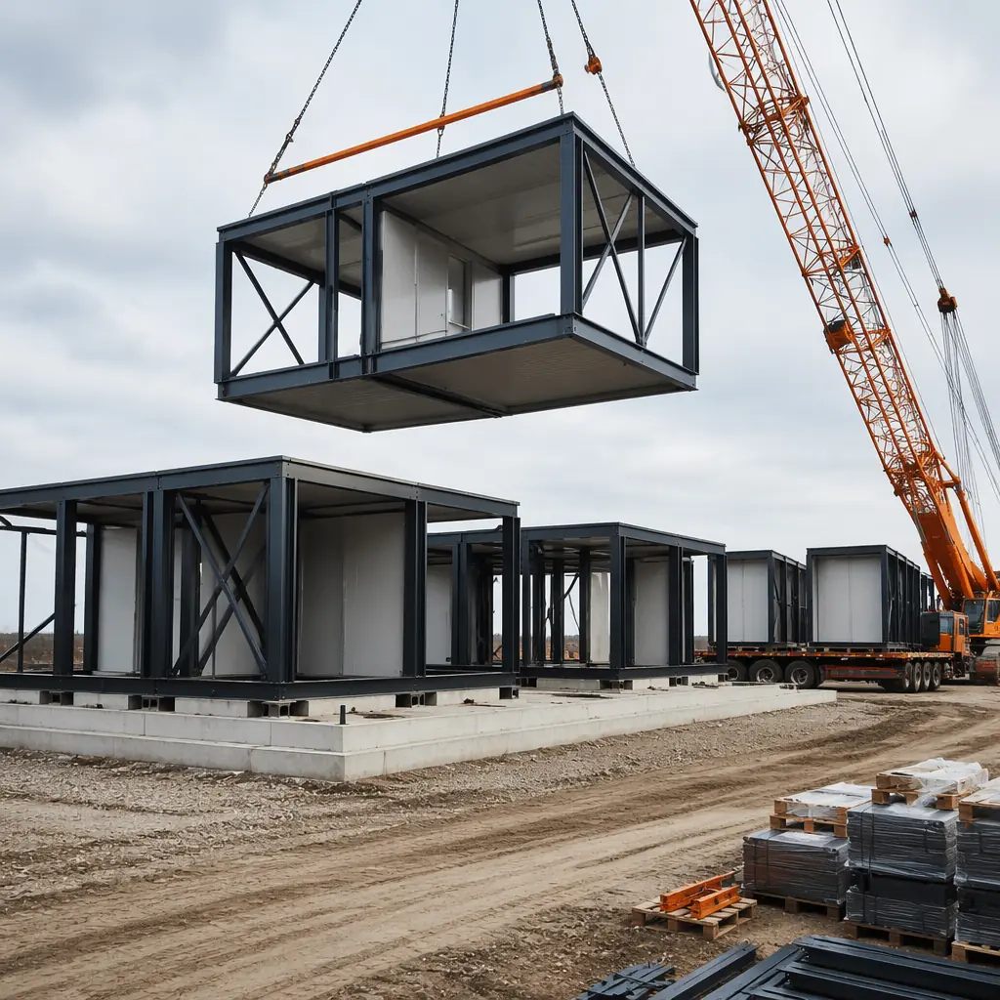

Most developers evaluate modular construction through one lens: construction cost per square foot. But the largest financial advantage of modular construction isn't in the build — it's in the tax code. Federal depreciation rules treat factory-assembled building components differently than site-built structures, and that difference can shift hundreds of thousands of dollars from future tax years into the present. This guide explains exactly how Section 179, bonus depreciation, and cost segregation apply to modular commercial buildings, and what the numbers look like on a real project.

Why Modular Construction Gets Better Tax Treatment
Under the Modified Accelerated Cost Recovery System (MACRS), commercial buildings are depreciated over 39 years and residential rental properties over 27.5 years. On a $1 million commercial building, that yields a $25,641 annual depreciation deduction — useful, but spread so thin across four decades that its present value is minimal. Most developers accept this as unavoidable.
Modular construction changes the equation because it blurs the line between real property and tangible personal property. IRS regulations treat assets that are not permanently affixed to land differently. When modules are manufactured in a factory and transported to a site, their components — walls, flooring systems, MEP rough-ins, ceiling assemblies — are fabricated before they become "real property." This creates a powerful opportunity: cost segregation studies can reclassify 20–40% of a modular building's cost basis into shorter-life asset categories — 5-year, 7-year, and 15-year property — dramatically accelerating depreciation.

A site-built commercial building depreciates its entire cost basis over 39 years. A modular building of identical square footage, identical function, and identical appraisal value can often reclassify 25–35% of its cost basis into 5, 7, and 15-year property — and then apply Section 179 and bonus depreciation to expense the majority of those shorter-life assets in Year One. The building is the same. The tax treatment is completely different. That is the modular tax advantage.
Section 179: First-Year Expensing up to $1,220,000
Section 179 of the Internal Revenue Code allows businesses to deduct the full purchase price of qualifying equipment and software in the year it is placed in service, rather than depreciating it over time. For tax year 2026, the Section 179 deduction limit is $1,220,000, with a phase-out threshold beginning at $3,050,000 in total equipment purchases.
What makes Section 179 particularly relevant for modular construction is the definition of "qualifying property." Under IRS guidelines, Section 179 applies to tangible personal property used in a trade or business. Modular building components that can be identified as separately manufactured assets — factory-installed HVAC systems, prefabricated bathroom pods, modular electrical panels, demountable partition systems — frequently qualify. A cost segregation study that identifies these components and assigns them to 5-year or 7-year property classes opens the door to immediate Section 179 expensing.
Section 179 in Practice: A Modular Office Example
Consider a $2 million modular office building. A cost segregation study identifies $480,000 in 5-year property (carpeting, dedicated electrical systems, data cabling, modular interior partitions, factory-installed lighting fixtures) and $320,000 in 7-year property (office furniture packages, certain MEP components manufactured off-site). The remaining $1,200,000 stays in 39-year real property.
Under Section 179, the entire $480,000 in 5-year property can be expensed in Year One, plus up to $740,000 of the 7-year property — a total of up to $1,220,000 in immediate deductions. At a 37% marginal federal rate, that's approximately $451,400 in tax savings in the first year alone. Compare that to the $51,282 in annual depreciation available under standard 39-year MACRS, and the difference in present value is stark. For developers evaluating a modular construction ROI, the tax advantage alone can shift a project from marginal to compelling.

Bonus Depreciation: 60% in 2026, Phasing Down
Bonus depreciation allows businesses to deduct a percentage of the cost of qualified property in the first year, on top of regular MACRS depreciation. Unlike Section 179, bonus depreciation has no dollar cap and applies automatically to qualified property with a recovery period of 20 years or less.
The Tax Cuts and Jobs Act of 2017 set bonus depreciation at 100% through 2022, but the phase-down schedule began in 2023:
| Tax Year | Bonus Depreciation % | Remaining Depreciable Basis |
|---|---|---|
| 2022 | 100% | 0% |
| 2023 | 80% | 20% over MACRS life |
| 2024 | 60% | 40% over MACRS life |
| 2025 | 60% | 40% over MACRS life |
| 2026 | 60% | 40% over MACRS life |
| 2027 | 40% | 60% over MACRS life |
| 2028 | 20% | 80% over MACRS life |
For modular construction, bonus depreciation is critical because it applies to the same assets identified in a cost segregation study. The interaction is powerful: cost segregation reclassifies modular components into 5, 7, and 15-year property; Section 179 provides dollar-capped immediate expensing; then bonus depreciation sweeps in behind Section 179 to deduct 60% of the remaining basis in Year One. The result is that a developer can expense the vast majority of their modular building's shorter-life assets immediately, even as the phase-down progresses.
For developers who want to understand the full financial picture beyond tax strategy, our modular construction financing guide covers how lenders evaluate accelerated depreciation benefits when underwriting construction loans.
The window is closing. At 60% for 2026, bonus depreciation still provides substantial first-year deductions. At 40% in 2027 and 20% in 2028, the advantage shrinks each year. Developers who place modular buildings in service during 2026 lock in a materially better tax position than those who wait.
Cost Segregation: From 39 Years to 5 Years
Cost segregation is an engineering-based study that identifies building components which can be reclassified from long-life real property (39 years for commercial, 27.5 years for residential rental) into shorter-life asset classes. The IRS accepts cost segregation under the precedent established in Hospital Corporation of America v. Commissioner (1997), and the methodology is codified in the IRS Cost Segregation Audit Techniques Guide.
Typical reclassifications in a modular building include:
5-Year Property (200% Declining Balance, Half-Year Convention)
- Factory-installed data and telecom cabling. Because it is manufactured into the module rather than pulled through conduit on-site, it meets the IRS criteria for tangible personal property.
- Modular interior partitions and demountable wall systems. Non-load-bearing walls manufactured off-site and mechanically attached are classified as personal property under IRS Section 1245.
- Specialty flooring systems. Carpet tiles, raised access flooring, and factory-installed resilient flooring that is not permanently glued to the subfloor.
- Process-specific electrical systems. Dedicated circuits for equipment, modular plug-and-play electrical distribution, and task lighting that serves specific business functions rather than general building operation.
7-Year Property
- Office furniture and fixture packages. When integrated during factory production, modular casework, workstations, and built-in storage are often classifiable as 7-year property.
- Certain MEP components. Factory-installed HVAC ductwork serving specific zones, modular plumbing assemblies, and prefabricated mechanical rooms can qualify when they serve equipment rather than the general building envelope.
15-Year Property (150% Declining Balance)
- Site improvements manufactured off-site. Modular retaining walls, prefabricated sidewalks, factory-built parking structures, and prefabricated landscaping infrastructure.
- Certain modular building envelope components. Connectors, seismic bracing, and module-to-module attachment systems that are not permanently integrated into the foundation.
The Numbers: A $5 Million Modular Commercial Building
Here is what the tax treatment looks like on a $5 million modular commercial building placed in service during 2026. Assumptions: a cost segregation study identifies 30% of the cost basis ($1.5 million) as short-life property — which is conservative for modular; typical reclassification rates for factory-built projects range from 25% to 40%.
| Asset Class | Cost Basis | Section 179 | Bonus Depreciation (60%) | Year 1 Depreciation |
|---|---|---|---|---|
| 5-Year Property | $750,000 | $750,000 | $0 | $750,000 |
| 7-Year Property | $470,000 | $470,000 | $0 | $470,000 |
| 15-Year Property | $280,000 | $0 | $168,000 | $168,000 |
| 39-Year Property | $3,500,000 | $0 | $0 | $89,744 |
| Total | $5,000,000 | $1,220,000 | $168,000 | $1,477,744 |
Compare this to standard 39-year straight-line MACRS depreciation on the full $5,000,000 basis: $128,205 per year. The modular cost-segregated approach delivers $1,477,744 in first-year depreciation deductions — 11.5x more than the conventional path. At a 37% marginal federal rate plus applicable state taxes, the net present value of accelerating these deductions into Year One typically exceeds $400,000 in real tax savings compared to straight-line depreciation.
This is not a theoretical exercise. Developers using our modular turnkey construction approach routinely commission cost segregation studies as part of project close-out, and the reclassified assets are documented in the factory production records — making the engineer's report simpler and the IRS audit risk lower than for site-built projects, where the distinction between real and personal property is inherently murkier.
MACRS Recovery Periods: 39-Year vs. 27.5-Year
The baseline depreciation system for real property under MACRS assigns commercial buildings to a 39-year recovery period using the straight-line method with a mid-month convention. Residential rental property uses a 27.5-year recovery period under the same method. The distinction matters because buildings placed in service as residential rental qualify for a faster write-off even before cost segregation enters the picture.
For modular multifamily developers, this means two layers of acceleration apply:
- MACRS class life: 27.5 years instead of 39 years — a 30% faster baseline depreciation schedule.
- Cost segregation: The same 25–40% of cost basis reclassified into 5, 7, and 15-year property — but on residential builds, bathrooms, kitchen cabinetry, and factory-installed appliances frequently fall into the shorter-life categories, often pushing the reclassification ratio higher than in commercial projects.
On a $10 million modular apartment building, the combination of 27.5-year MACRS and cost segregation can produce first-year depreciation exceeding $2.4 million — an enormous tax shield that transforms project-level cash flow in the critical early years. Our analysis of modular construction cost per square foot shows that the effective after-tax cost of modular construction, when depreciation benefits are properly modeled, is consistently 8–14% lower than site-built alternatives with equivalent specifications.
How Modular Construction Qualifies for Tangible Personal Property Classification
The IRS uses a multi-factor test to distinguish real property (depreciated over 39/27.5 years) from tangible personal property (eligible for 5/7/15-year treatment and Section 179). The key factors are permanence of attachment, adaptability of the structure for alternative uses, and the nature of the property's relationship to the building's operation.
Modular construction scores strongly on all three fronts for the components manufactured off-site:
- Permanence of attachment. Modular components are mechanically connected rather than permanently integrated. Module-to-module connections are bolted, not welded; MEP connections are plug-and-play; interior partitions are demountable. Under the IRS "Whiteco Factors" test, mechanical attachment weighs in favor of personal property classification.
- Adaptability. A modular building can be disassembled, relocated, and reconfigured — a characteristic that site-built structures lack. The IRS Cost Segregation Audit Techniques Guide specifically identifies "moveable" as a factor supporting shorter recovery periods.
- Relationship to operations. When modular components serve specific business functions — a factory-installed server room, a prefabricated clean room, a modular laboratory pod — rather than general building operation, the IRS treats them as equipment rather than structural components.
The key practical step is documentation. Developers should work with their modular manufacturer to produce an itemized bill of materials that identifies factory-installed components separately from site-installed work. This documentation forms the foundation of a cost segregation study and substantially reduces the engineering hours required. MODURA provides this breakdown as a standard deliverable on every project, and we recommend involving a cost segregation specialist during the design phase rather than after completion — component classification decisions made early in the design process can materially increase the percentage of cost basis eligible for accelerated treatment.
Cost segregation is engineering, not accounting. The engineer walks the building, identifies every component, and assigns it to an asset class based on IRS precedent. In a modular building, the factory production records do half the engineer's work before they arrive on site. That is why modular cost segregation studies typically cost less and produce higher reclassification ratios than site-built studies.
Insurance and Risk Considerations for Tax-Optimized Modular Projects
While tax strategy is the headline financial advantage, it intersects with insurance planning in ways developers should anticipate. The same cost segregation study that reclassifies building components for depreciation purposes also defines replacement cost values for insurance underwriting — and modular buildings have structural characteristics that affect coverage terms.
Factory-assembled modules carry lower builder's risk premiums during construction because climate-controlled factory production eliminates weather-related losses, the largest category of construction insurance claims. During operation, the higher precision of factory construction — ±2mm tolerances versus ±25mm for site-built — translates into fewer structural warranty claims and lower long-term maintenance costs. For a complete analysis of how modular construction affects insurance underwriting across the project lifecycle, see our guide to modular construction insurance and risk management.
Additionally, the lower lifecycle maintenance burden of modular buildings — documented in our modular building maintenance and lifecycle costs analysis — reduces the total cost of ownership independent of tax strategy. When depreciation acceleration and maintenance savings are combined in a full lifecycle financial model, modular construction produces a materially higher net present value under virtually every scenario.
The Developer's Tax Planning Checklist
Maximizing the modular tax advantage requires planning before construction begins. Here are the five steps every developer should take:
- Engage a cost segregation specialist during design. The classification of modular components as 5, 7, or 15-year property depends on design decisions made before production. A specialist who reviews the modular manufacturer's bill of materials during the design phase can identify opportunities to structure specifications for maximum tax efficiency — for instance, specifying demountable partition systems instead of permanently affixed drywall where functionally equivalent.
- Request an itemized factory bill of materials. Your modular manufacturer should provide a line-item breakdown separating factory-fabricated components from site-installed work. This document is the primary input for the cost segregation engineer and should be contractually required as a project deliverable. For guidance on manufacturer selection criteria, see our modular construction partner evaluation guide.
- Plan the placed-in-service date around the tax year. Section 179 and bonus depreciation deductions apply in the year the property is placed in service. A December placement captures the full-year deduction. A January placement defers it by 12 months. Modular construction's compressed timeline makes this precision feasible — schedule the final occupancy certificate to optimize tax outcomes.
- Model both Section 179 and bonus depreciation interactions. Section 179 applies first, up to the $1,220,000 limit, to 5-year and 7-year property. Bonus depreciation then applies to the remaining basis of qualified property. Work with a tax professional to model the optimal allocation — in some cases, it may be advantageous to apply Section 179 to assets with the longest remaining recovery period first, leaving assets with higher first-year MACRS deductions for bonus depreciation treatment.
- Maintain documentation for IRS audit defense. Modular construction provides stronger documentation trails than site-built construction by its nature: factory production records, shipping manifests, installation logs, and module-specific quality control reports all support the cost segregation study's asset classifications. Organize these records from day one.
The Bottom Line on Modular Construction Tax Strategy
The tax treatment of modular construction is not a loophole or an aggressive interpretation — it is the straightforward application of IRS rules to a construction method that genuinely blurs the line between real property and manufactured personal property. The factory production process that makes modular construction faster, more precise, and more predictable also creates the documentation and physical characteristics that support accelerated depreciation.
For a developer placing a $5 million modular commercial building in service during 2026, the first-year tax deduction can exceed $1.4 million — compared to $128,000 under standard MACRS. That difference, discounted to present value at the developer's cost of capital, represents real money that changes project-level economics. It is money that can be reinvested in the next project, used to improve financing terms, or returned to investors as accelerated distributions.
The window for maximum benefit is 2026. At 60% bonus depreciation, the current year still offers substantial acceleration. As the phase-down continues toward 20% in 2028, the advantage shrinks. Developers who act now capture a tax position that will not be available at the same level again under current law.